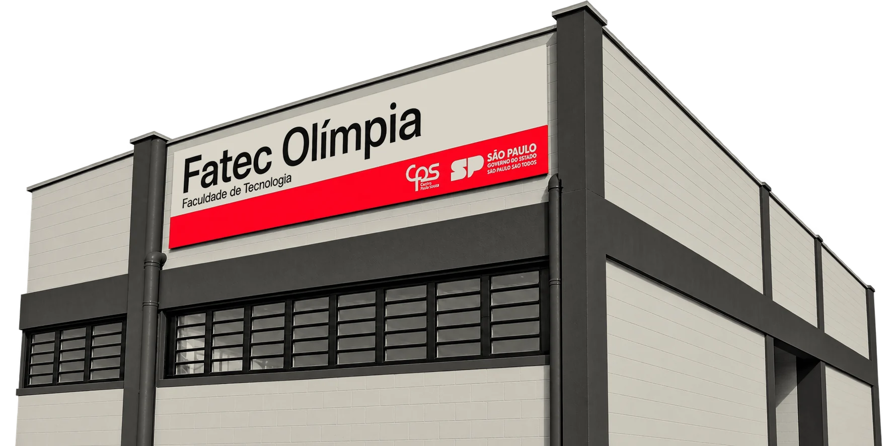

Turismo e tecnologia movem Olímpia, e são exatamente os cursos que a Fatec trouxe para a cidade. Na Mostra de Projetos, os alunos da Fatec e da Etec Olímpia apresentam o que criaram neste semestre: software, soluções para problemas reais da cidade, roteiros e eventos para quem vive aqui e para quem nos visita. Uma noite para a comunidade ver de perto o que está nascendo em Olímpia, conversar com quem fez e escolher seus favoritos.

29.10
01 — A Mostra
O Vitrine CPS Olímpia tem o objetivo de mostrar o que acontece dentro da Fatec e da Etec. Na noite de 29 de outubro o campus vira uma feira de projetos. Cada turma monta seu espaço, os grupos apresentam o que construíram e a comunidade circula livremente. Uma banca de avaliadores dá nota técnica aos projetos, e o público também participa, avaliando o impacto e a relevância para a sociedade.
Software, aplicativos, roteiros turísticos, eventos e soluções para problemas reais da cidade, apresentados por quem os fez. Pergunte, teste, opine.
Os grupos estão lá para explicar o problema que escolheram, o que funcionou e o que ainda falta. É a melhor parte da noite.
Com uma credencial gerada pelo QR code da recepção, você dá notas pelo celular, uma vez por projeto. Sem aplicativo, sem cadastro prévio. Como funciona
Premiação: nota da banca (70%) + público (30%). Resultado divulgado pela coordenação após o evento.
02 — Projetos desta edição
Software, turismo e gestão, feitos ao longo do semestre por quem estuda em Olímpia. Cada projeto tem a própria página: abra, conheça e compartilhe as que gostar.
Agendamento por WhatsApp para a UBS do Jardim Santa Efigênia. A fila da manhã deixa de existir.
Sensores de umidade na horta da escola municipal avisam a turma pelo celular quando é hora de regar.
Mapa colaborativo das calçadas do centro de Olímpia com rampas, degraus e obstáculos para cadeirantes.
03 — Quem faz
Esta edição conta com um sistema de publicação e avaliação dos projetos de forma digital e segura. A plataforma foi desenvolvida em conjunto por alunos do 1º, 2º e 3º semestre de Desenvolvimento de Software Multiplataforma da Fatec Olímpia, aplicando o aprendizado adquirido em sala, com mentoria de professores. Ela dá a cada projeto uma página pública para divulgar, organiza o evento e registra a avaliação; a coordenação modera o conteúdo.
É software livre: o código fica público no GitHub, e a cada semestre uma nova turma pode melhorá-lo. A ideia é que, com o tempo, vire o portal permanente dos projetos da comunidade Fatec e Etec Olímpia.
Cada grupo entra com o RA, recebe um link de edição e monta a própria página: capa, resumo, galeria, equipe e links. Nada vai ao ar sem a aprovação da coordenação do curso.
Cada projeto tem um endereço permanente, com prévia pronta para o WhatsApp. O grupo compartilha, a família compartilha, a cidade fica sabendo. O link continua valendo nas edições seguintes.
QR code assinado nas recepções, credencial única por visitante, notas pelo próprio aparelho e voto separado dos dados pessoais. Tudo roda no navegador.
Código público no GitHub, feito em equipe por alunos de DSM com revisão humana de cada mudança. A próxima turma pode continuar de onde esta parou.
Área do grupo
Entre com o RA para receber o link de edição do seu projeto. O link aparece uma única vez: guarde-o. A coordenação do curso aprova a página antes de ela ficar pública.
Patrocínio e apoio